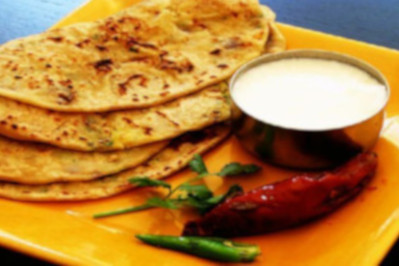
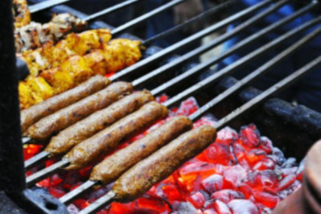
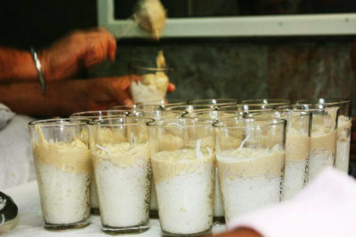
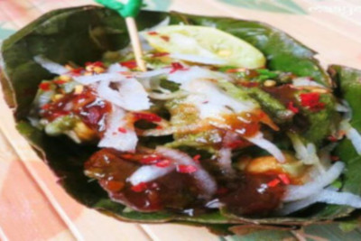
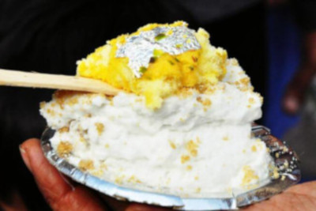
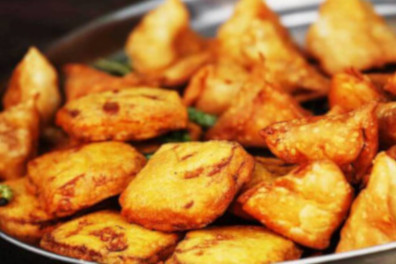
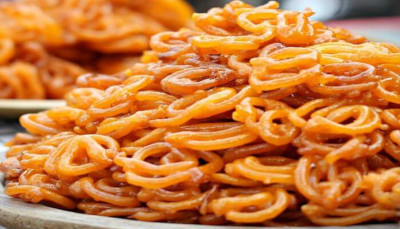
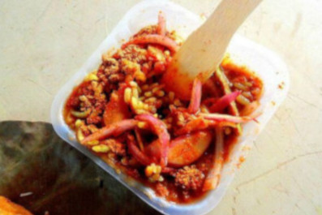
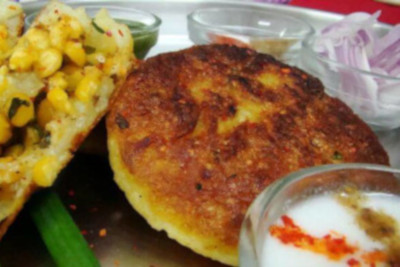
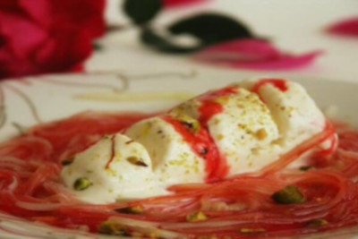

Best Street Food Places
11. Parathe

The most preferred breakfast of Delhi can be eaten at any time, now-a-days. A healthy splash of butter and extravagant stuffing in the paratha makes it a best street food in Delhi
Where: Parathe Wali Gali, Moolchand ke Parathe, Not Just Parathas at Rajouri Garden and Kakke di Hatti at Fatehpuri
12. Kebabs

The best street food of Delhi is its kebabs. You will get a huge variety of kebabs in Delhi — from Kakori Kebab to Galouti Kebab to Shami Kebab. All of these kebabs are full of flavors and spices that remind you of the Nawabs.
Where:Kebab points in local markets, Chawla’s at Tilak Nagar, Al Kakori at Vasant Place Market
13.Rabri Faluda

TThis syrupy delight is full of caramelized milk and dry fruits. Not too sweet, this dessert will leave you asking for more. It is my personal favorite dessert since a long time. Just by talking about it, I got a craving for this nectarous dessert.
Where:Giani’s di Hatti in Chandni Chowk.
14.Ram Ladoo

These fried dal pakoras or ram ladoos are to die for. The crispiness of radish and tanginess of chutney with these fried dollops make for every foodie’s fancy.
Where:Local vendors with carts at Central market, Janak Puri, Green Park, South-Ex I, Tilak Nagar
15. Daulat ki Chaat

This famous food of Delhi was invented by The Taste God himself. You don’t believe me? Then try it out for yourself and you will see that it tastes too good to be a human creation.
Where:Only in Chandni Chowk
16. Pakode

You’d give a damn about dieting if you have a plate full of these enticing pakoras. This scrumptious street food in Delhi can make your dull evenings spicy and sad monsoons happy.
Where:Nairoji Nagar, Kamla Nagar, Sarojni Nagar, Gol Market, UPSC Building
17. Jalebi

Available in best street food places in Delhi, this sugary sweetness is a key to every Delhites’ heart. I don’t know about you but Jalebi can always enhance my mood.
Where: Jalebi wala in Chandni Chowk, Pandara Road, Bangla Sweets in CP, Jaleba Store in Chandni Chowk
18. Multani Moth Kachori

A combination of rice, lentils, onion rings and kachori, this Delhi cuisine is a must try. The assault of hidden flavors on your tongue will leave you speechless.
Where:Chandni Chowk and Moth Kachori Bhandar in Paharganj
19. Aloo Tikki

One of the best street food in Delhi is its famous aloo tikki. You just can’t forgo this flavor assault and then regret later. For the sanity of your inner foodie, you just have to try this.
Where:Natraj in Chandni Chowk, Atul Chaat Corner in Rajouri Garden, Ranjeet Tikki Wala at Janak Puri
20. Kulfi Faluda

This syrupy goodness is worth all the calorie intake. The flowing faluda and frozen kulfi will make for a good dessert for all the people with sweet-tooth.
Where:Kamla Nagar Market and Kakke di Hatti in Chandni Chowk and Kaseru Walan in Paharganj